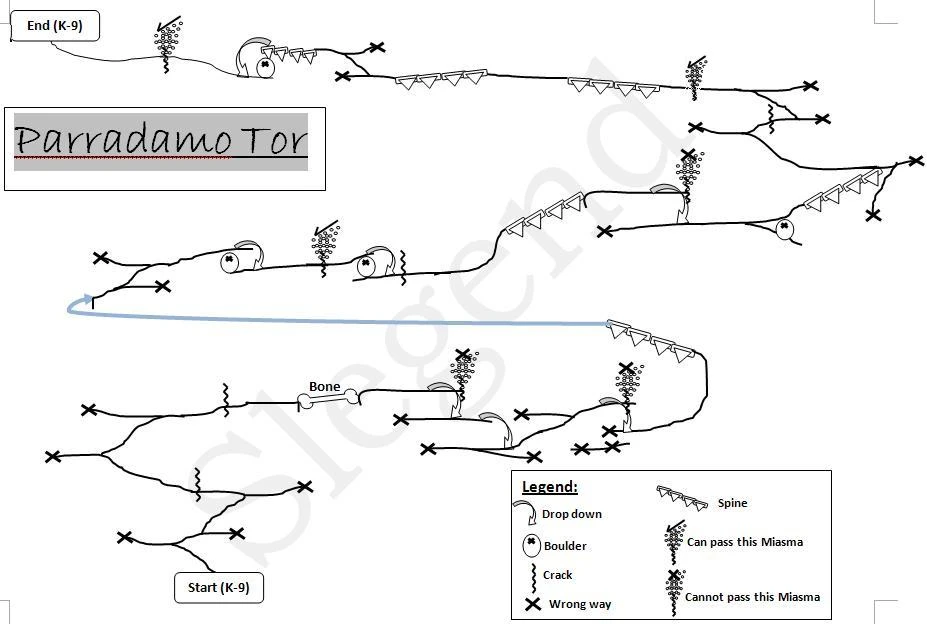

Before you begin
- Complete CoP 3-2.
- The Road Forks active; complete the Windurst NPC sequence before collecting the jewel.
Starting point
Arrival scene · Windurst Waters
People in this mission


Walkthrough
- Enter Windurst Waters. Speak in order to Ohbiru-Dohbiru (south J-9), Yoran-Oran (Windurst Walls E-5), Kyume-Romeh (Waters north F-10), Honoi-Gomoi (Waters south E-7, upstairs rear entrance), then Yoran-Oran again.
- Reach Attohwa Chasm through the Maze of Shakhrami. Examine Loose Sand at K-8 to spawn Lioumere. Pull it away and reclaim its attention after special attacks so it cannot return home and heal.
- After victory, inspect Loose Sand again for the Mimeo Jewel. You have 30 real minutes to carry it up Parradamo Tor.
- Start on the Tor's southeast side. Follow the narrow ledge around its lower circuit; the first two permanent vents require dropping carefully onto the ledge below. At temporary vents, wait for the opening. At the low ledge after the counterclockwise circuit, take the rising path and continue clockwise to the summit. Use the route map; avoid auto-follow.
- Examine Cradle of Rebirth at the summit to obtain the three Mimeo Feathers. If the jewel breaks, return to Loose Sand for another; the NM need not be repeated after the recorded kill.
- Speak to Yoran-Oran, Yujuju (Port Windurst M-6), Tosuka-Porika (Waters north G-8), then Yoran-Oran again. With both branches finished, report to Cid.
Battle and progress notes
- The jewel breaks when you leave Attohwa or log out. The mountain timer is real time, not Vana’diel time.
Completion and reward
Windurst branch completed; Mimeo Feathers used in its scenes.
Route illustration


Parradamo Tor route map, via HorizonXI Wiki; original FFXIclopedia watermark retained.
Area maps
Open a zone below, then select a map to enlarge it. Match the named floors and grid coordinates in the steps; these are reference area maps, not a live position tracker.
Windurst Waters


Windurst Walls


Port Windurst


Maze of Shakhrami


Attohwa Chasm


Metalworks


Zone guides
References
Steps are an original summary of the linked walkthrough and reviewed source. Other servers’ bonus rewards are not included. How to read requirements, waits and battlefield notes.